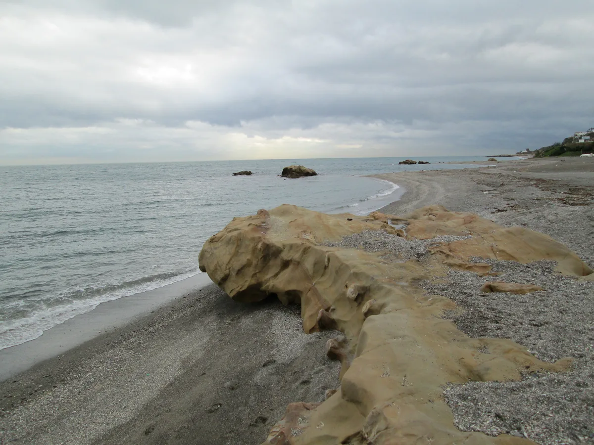
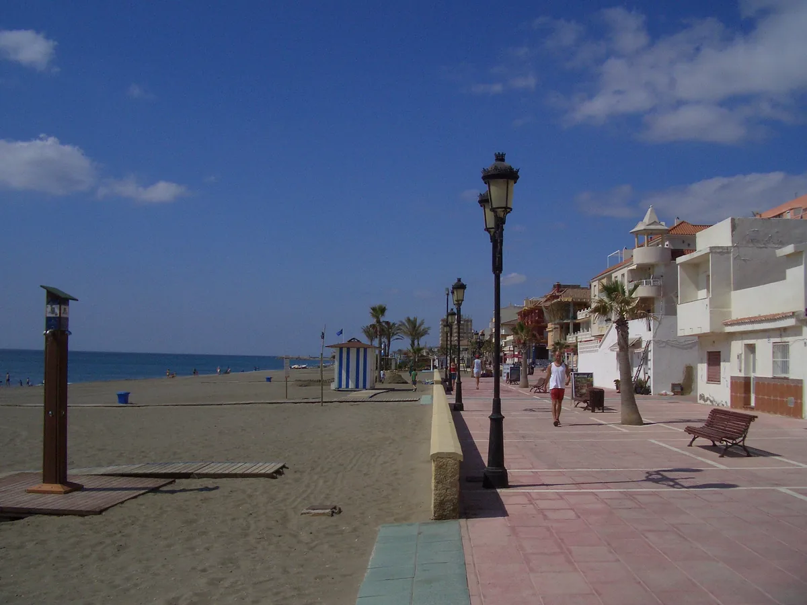
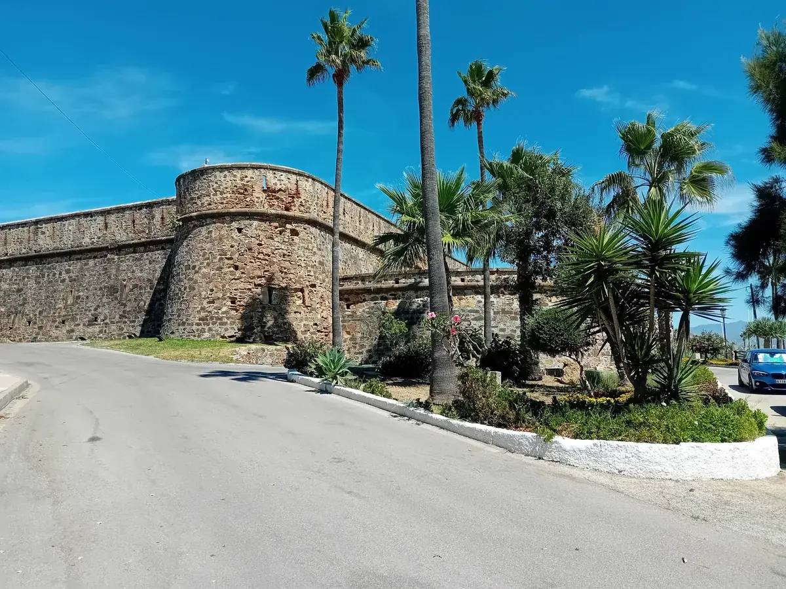
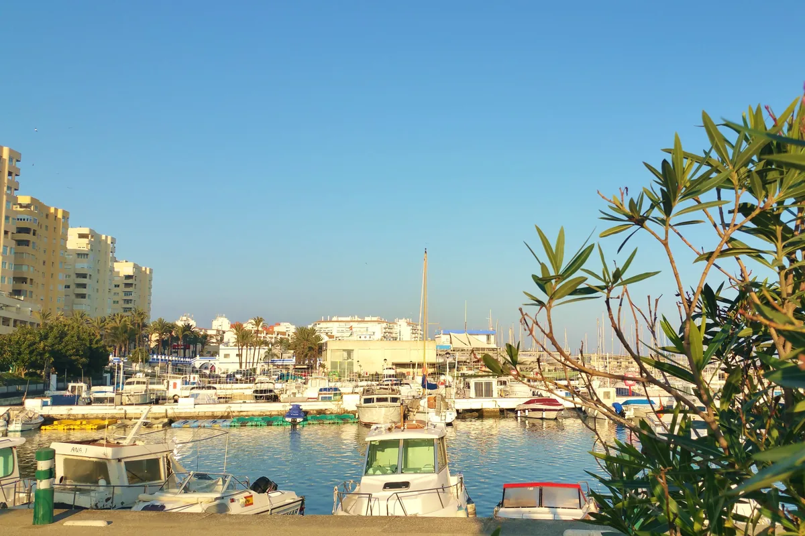
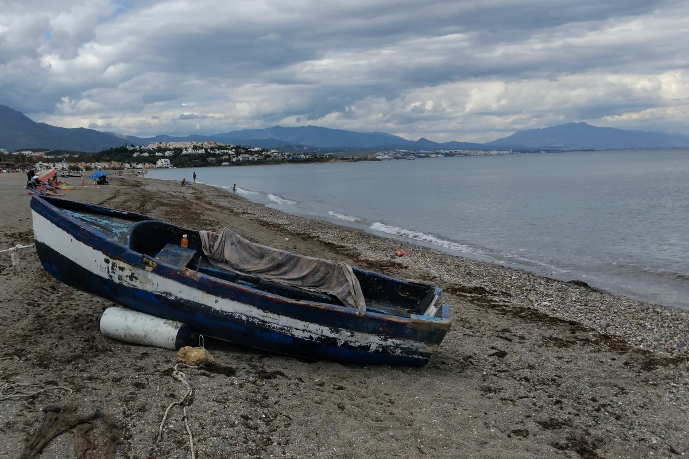
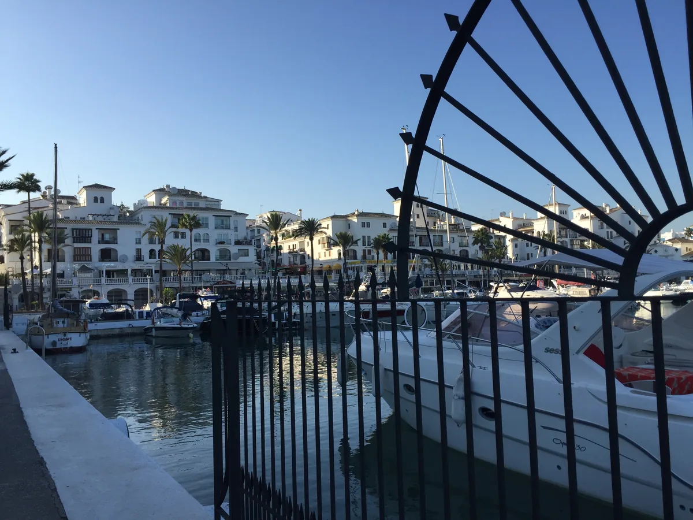
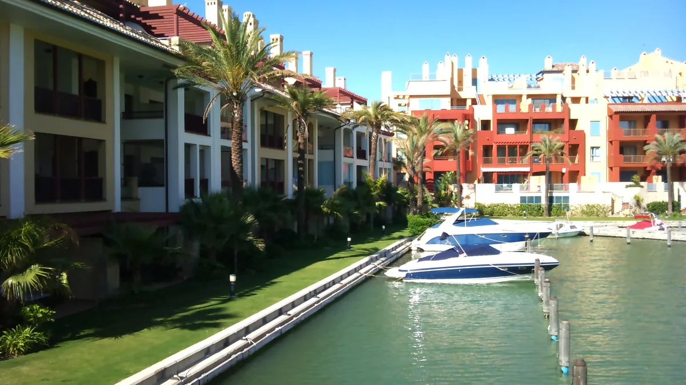
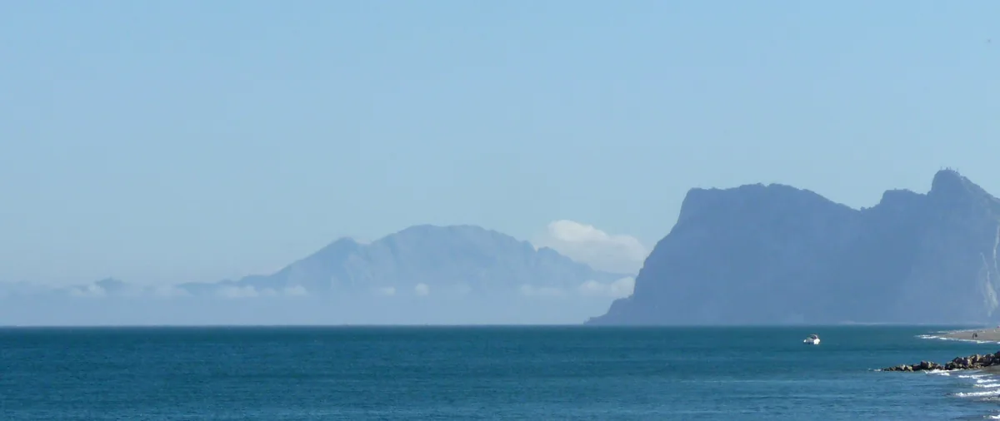

La zona
Del paseo a los campos de polo
Las siete localidades, del paseo a los campos de polo, se describen abajo. Cada una tiene una breve descripción y una instantánea de lo que hay ahora en venta.
San Pedro de Alcántara · Estepona · Casares · Manilva · Sotogrande
Westersol pone en contacto a compradores con agentes locales contrastados y realmente buenos, entre San Pedro de Alcántara y Sotogrande. Usted nos dice qué busca. Nosotros elegimos personalmente a un agente en el que confiamos y se lo presentamos, sin coste para usted. El agente se ocupa de las visitas y de la conversación sobre el precio. La guía de compra y las guías de localidades le ayudan a prepararse.

Esta costa no es un solo mercado. San Pedro se siente como un pueblo de verdad, con un paseo largo junto a la playa. Estepona tiene un casco antiguo y un puerto que sigue trabajando. Más al oeste, los pueblos suben la ladera, con vistas a Gibraltar y, en un día claro, a África. Cada lugar tiene su ritmo y sus precios. Este es el comienzo de la guía. La guía de compra completa y las guías de localidades van más allá. Cuando esté listo, le presentamos a un agente local de confianza.
Las siete localidades, del paseo a los campos de polo, se describen abajo. Cada una tiene una breve descripción y una instantánea de lo que hay ahora en venta.
En una vivienda de reventa en Andalucía usted paga un 7 por ciento de impuesto de transmisiones (ITP). En una vivienda nueva típica es un 10 por ciento de IVA más un 1,2 por ciento de actos jurídicos documentados (AJD), un 11,2 por ciento en total. Además están notario, registro de la propiedad y, por lo general, un abogado — partidas sin un porcentaje legal fijo. La horquilla que a menudo se cita, de un 10 a un 13 por ciento extra, es una orientación, no un presupuesto. La guía de compra recoge las fuentes.
Primero un NIE y un abogado que trabaja para usted, no para el vendedor. Luego una reserva, el contrato de arras, la due diligence y la escritura ante notario. Una compra suele llevar meses. Por eso preguntamos por sus plazos: en un plazo de doce meses, o más tarde.
Leer la guía de compra completa Guías de localidades






Una instantánea de viviendas en venta en cada una de las siete localidades, tomada de Idealista el 15 de noviembre de 2026. No son anuncios de este sitio.

San Pedro de Alcántara tiene un paseo largo junto a la playa y un centro que todavía se siente local, con Guadalmina al lado.
1.079 viviendas en venta (Idealista, 15 de noviembre de 2026).
Los precios de ejemplo en esa fecha estaban entre 395.000 euros y 1.395.000 euros.

Estepona es el casco antiguo, el puerto y, detrás, Sierra Bermeja.
5.580 viviendas en venta (Idealista, 15 de noviembre de 2026).
Los precios de ejemplo en esa fecha estaban entre 269.000 euros y 1.395.000 euros.

Casares está arriba en la ladera, un pueblo blanco, con golf y vistas al mar en la costa de abajo.
809 viviendas en venta (Idealista, 15 de noviembre de 2026).
Los precios de ejemplo en esa fecha estaban entre 330.000 euros y 775.000 euros.

Manilva es un pueblo de diario, con un paseo junto al mar.
98 viviendas en venta en la localidad misma, no en el municipio más amplio (Idealista, 15 de noviembre de 2026).
Los precios de ejemplo en esa fecha estaban entre 250.000 euros y 750.000 euros.

Sabinillas es un pueblo de diario, con un paseo junto al mar.
149 viviendas en venta (Idealista, 15 de noviembre de 2026).
Los precios de ejemplo en esa fecha estaban entre 220.000 euros y 1.100.000 euros.

La Duquesa gira en torno a su puerto deportivo.
235 viviendas en venta en La Duquesa y Puerto de la Duquesa juntas (Idealista, 15 de noviembre de 2026).
Los precios de ejemplo en esa fecha estaban entre 275.000 euros y 699.000 euros.

Sotogrande es polo, golf, el puerto y las urbanizaciones cerradas, con Alcaidesa al lado.
879 viviendas en venta (Idealista, 15 de noviembre de 2026).
Los precios de ejemplo en esa fecha estaban entre 279.000 euros y 1.350.000 euros.
Valores orientativos, basados en anuncios públicos del 15 de noviembre de 2026.
Son ejemplos del tipo de viviendas nuevas que puede encontrar entre San Pedro de Alcántara y Sotogrande. No son anuncios. Westersol no tiene acuerdo con ningún proyecto, y no vendemos sobre plano.
Edificios de apartamentos nuevos a un corto paseo del paseo y de la arena, cerca del centro.

Edificios de apartamentos en primera y segunda línea en la costa entre San Pedro y Estepona.

Adosados y villas por encima de Estepona, muchos con vistas al mar y a Sierra Bermeja.
Apartamentos alrededor de los campos de golf en la costa de Casares, incluida la zona de Finca Cortesin.

Viviendas con vistas al puerto deportivo, y apartamentos nuevos a pocos minutos del puerto.

Villas y apartamentos nuevos en las urbanizaciones, cerca del golf, los campos de polo y el puerto.
Después de la solicitud, la agencia asociada puede mostrarle los proyectos que están realmente en venta en ese momento.

Nuestra fortaleza es sencilla: seleccionamos personalmente agentes locales de confianza, realmente buenos, y le presentamos a uno de ellos, sin coste para usted. No somos una inmobiliaria, ni una parte en la negociación.
Presupuesto, plazos, zona, tipo de vivienda, y si compra al contado o con hipoteca.
Revisamos su solicitud y seleccionamos a un agente local que hemos contrastado: alguien con conocimiento real de esta costa, que trabaja con transparencia y ayuda bien a los compradores.
Con su consentimiento, le presentamos por escrito, antes de cualquier contacto. Esa presentación no le cuesta nada.
Las visitas, la oferta y la conversación sobre el precio corresponden al agente. Seguimos el expediente hasta la escritura.
La historia siguiente es un ejemplo del proceso. No se refiere a un cliente real.
Una pareja de Madrid busca un adosado cerca del casco antiguo de Estepona. Rellenan el formulario con su presupuesto, sus plazos y la zona que tienen en mente.
Westersol responde, comprueba esos puntos y pregunta si aceptan que se les presente a un agente local de confianza que hemos seleccionado personalmente. Si dicen que sí, la presentación sale por escrito. A partir de entonces el agente organiza las visitas y lleva la negociación.
Esta sección permanece vacía hasta que un comprador real acepte por escrito que podamos usar sus palabras aquí.
Para compradores que leen en español y buscan una segunda residencia entre San Pedro de Alcántara y Sotogrande, con un presupuesto a partir de unos 300.000 euros y un horizonte de doce meses o menos. Si todavía está explorando, puede rellenar el formulario; esas solicitudes se tratan como información, no como una presentación inmediata.

Un formulario breve, el inicio de una presentación a un agente de confianza. Le responderemos en español. Usamos sus datos solo para tramitar su solicitud y, únicamente con su consentimiento posterior, pasarlos a ese agente.